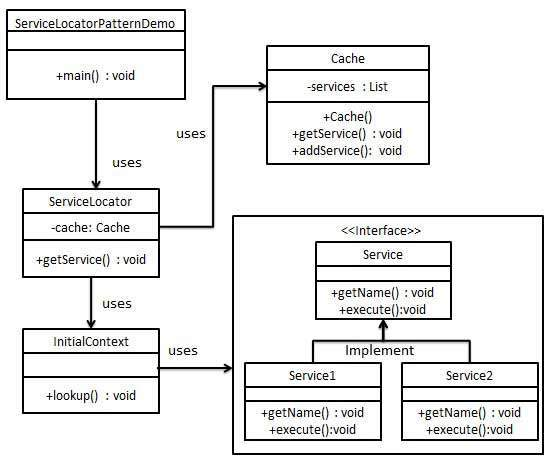

Design Pattern
Desgin Patter - Abstract Factory Pattern
Abstract Factory patterns work around a super-factory which creates other factories. This factory is also called as factory of factories. This type of design pattern omes under creational pattern as this pattern provides one of the best ways to create an object.
In Abstract Factory pattern an interface is responsible for creating a factory of related objects without explicitly specifying their classes. Each generated factory can give the objects as per the Factory pattern.
Implementation
We are going to create a Shape and Color interfaces and concrete classes implementing these interfaces. We create an abstract factory class AbstractFactory as next step. Factory classes ShapeFactory and ColorFactory are defined where each factory extends AbstractFactory. A factory creator/generator class FactoryProducer is created.

Singleton Pattern
This pattern involves a single class which is responsible to create an object while making sure that only single object gets created. This class provides a way to access its only object which can be accessed directly without need to instantiate the object of the class.
Implementation Singleton
We're going to create a SingleObject class. SingleObject class have its constructor as private and have a static instance of itself.

Builder Pattern
Builder pattern builds a complex object using simple objects and using a step by step approach. This type of design pattern comes under creational pattern as this pattern provides one of the best ways to create an object.
A Builder class builds the final object step by step. This builder is independent of other objects.
We have considered a business case of fast-food restaurant where a typical meal could be a burger and a cold drink. Burger could be either a Veg Burger or Chicken Burger and will be packed by a wrapper. Cold drink could be either a coke or pepsi and will be packed in a bottle.

Prototype Pattern
Prototype pattern refers to crating duplicate object while keeping performance in mind. This type of design pattern comes under creational pattern as this pattern provides one of the best ways to create an object.
This pattern involves implementing a prototype interface which tells to create a clone of the current object. Thist pattern is used when creation of object directly is costly.
We're going to create an abstract class Shape and concrete classes extending the Shape class. A class ShapeCache is defined as a next step which stores shape objects in a Hashtable and returns their clone when requested.

Adapter Pattern
Adapter pattern works as a bridge between two incompatible interfaces. This type of design pattern comes under strcutural pattern as this pattern combines the capability of two independent interfaces.
This pattern involves a single class which is responsible to join functionalities of independent or incompatible interfaces. A real life example could be a case of card reader whihc acts as an adapter between memory card and a laptop. so that memory card can be read via laptop.

State Pattern
In State pattern a class behavior changes based on its state. This type of design pattern comes under behavaior pattern.
In State pattern, we create objects which represent various states and a context object whose behavior varies as its state object changes.

Strategy Pattern
In Strategy pattern, a class behavior or its algoirithm can be changed at run time. This type of design pattern comes under behavior pattern.
In Strategy pattern, we create objects which represent various strategies and a context object whose behavior varies as per its strategy object. The strategy object changes the executing algorithm of the context object.

Observer Pattern
Observer pattern is used when there is one-to-many relationship between objects such as if one object is modified, its dependent objects are to notified automatically. Observer pattern falls under behavioral pattern category.

Service Locator Pattern
The service locator design pattern is used when we want to locate various services using JNDI lookup. Considering high cost of looking up JNDI for a service, Service Locator pattern makes use of caching technique. For the first time a service is required, Service Locator looks up in JNDI and caches the service object. Further lookup or same service via Service Locator is done in its cache which improves the performance of application to greate extent. Following are the entities of this type of design pattern.
- Service: Actual Service which will process the request. Reference of such service is to be looked upon in JNDI server.
- Context / Initial Context: JNDI Context carries the reference to service used for lookup purpose.
- Service Locator: Service Locator is a single point f contact to get services by JNDI lookup caching the services.
- Cache: Chace to store references of services to reuse them.
- Client: Client is the object that invokes the services via ServiceLocator.

Bridge Pattern
Bridge is used when we need to decouple an abstraction from its implementation so that the two can vary independently. This type of design pattern comes under structural pattern as this pattern decouples implementation class and abstract class by providing a bridge structure between them.
This pattern involves an interface which acts as a bridge which makes the functionality of concrete classes independent from interface implementr classes. Both types of classes can be altered structurally without affecting each other.
We are demonstrating use of Bridge pattern via following example in which a circle can be drawn in different colors using same abstract class method but different bridge implementer classes.

Filter Pattern
Filter pattern or Criteria pattern is a design pattern that enables developers to filter a set of objects using different criteria and chaining them in a decoupled way through logical operations. This type of design pattern comes under strcutural pattern as this pattern combines multiple criteria to obtain single criteria.

Get more information at here.